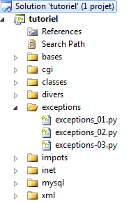

6. Les exceptions
Nous nous intéressons maintenant aux exceptions.
 |
Programme (exceptions_01)
Le premier script illustre la nécessité de gérer les exceptions.
# -*- coding=utf-8 -*-
# on provoque une erreur
x=4/0
On provoque volontairement une erreur pour voir les informations produites par l'interpréteur. Le résultat écran est le suivant :
La ligne 4 nous donne :
- le type de l'exception : ZeroDivisionError ;
- le message d'erreur associé : integer division or modulo by zero. Il est en anglais. C'est quelque chose qu'on peut vouloir changer.
La régle essentielle en programmation est qu'on doit tout faire pour éviter les plantages " sauvages " comme celui ci-dessus. Même en cas d'erreur, le programme doit se terminer proprement en donnant des informations sur l'erreur qui s'est produite.
La syntaxe d'une gestion d'exceptions est la suivante :
try:
actions susceptibles de lancer une exception
except [classe d'exception, ...]:
actions de gestion de l'exception
finally:
actions toujours exécutées qu'il y ait exception ou non
Dans le try, l'exécution des actions s'arrête dès qu'une exception survient. Dans ce cas, l'exécution se poursuit avec les actions de la clause except.
La clause
except [MyException, ...]:
intercepte les exceptions de type MyException ou dérivé. Lorsque dans un try se produit une exception, l'interpréteur examine les clauses except associées au try dans l'ordre où elles ont été écrites. Il s'arrête sur la première clause except permettant de traiter l'exception qui s'est produite. S'il n'en trouve aucune, l'exception remonte à la méthode appelante. Si celle-ci a un try / except, l'exception est de nouveau gérée sinon elle continue à remonter la chaîne des méthodes appelées. En dernier ressort, elle arrive à l'interpréteur Python. Celui-ci arrête alors le programme excécuté et affiche un message d'erreur du type montré dans l'exemple précédent. La règle est donc que le programme principal doit arrêter toutes les exceptions qui peuvent remonter des méthodes appelées.
Une exception transporte avec elle des informations sur l'erreur qui s'est produite. On peut les obtenir avec la syntaxe suivante :
except MyException as informations:
informations est un tuple qui transporte les informations liées à l'exception.
La syntaxe
except MyException, erreur:
affecte à la variable erreur, le message d'erreur lié à l'exception.
Pour lancer une exception, on utilise la syntaxe
raise MyException(param1, param2, ...)
où le plus souvent MyException est une classe dérivée de la classe Exception. Les paramètres passés au constructeur de la classe seront disponibles à la clause except des structures d'interception des exceptions.
Ces concepts sont illustrés par le script suivant.
Programme (exceptions_02)
Le script suivant gère explicitement les erreurs :
# -*- coding=utf-8 -*-
i=0
# on provoque une erreur et on la gère
x=2
try:
x=4/0
except ZeroDivisionError, erreur:
print ("%s : %s ") % (i, erreur)
# la valeur de x n'a pas changé
print "x=%s" % (x)
# on recommence
i+=1
try:
x=4/0
except Exception, erreur:
# on intercepte l'exception la plus générale
print ("%s : %s ") % (i, erreur)
# on peut intercepter plusieurs types d'exceptions
i+=1
try:
x=4/0
except ValueError, erreur:
# cette exception ne se produit pas ici
print ("%s : %s ") % (i, erreur)
except Exception, erreur:
# on intercepte l'exception la plus générale
print ("%s : (Exception) %s ") % (i, erreur)
except ZeroDivisionError, erreur:
# on intercepte un type précis
print ("%s : (ZeroDivisionError) %s ") % (i, erreur)
# on recommence en changeant l'ordre
i+=1
try:
x=4/0
except ValueError, erreur:
# cette exception ne se produit pas ici
print ("%s : %s ") % (i, erreur)
except ZeroDivisionError, erreur:
# on intercepte un type précis
print ("%s : (ZeroDivisionError) %s ") % (i, erreur)
except Exception, erreur:
# on intercepte l'exception la plus générale
print ("%s : (Exception) %s ") % (i, erreur)
# une clause except sans arguments
i+=1
try:
x=4/0
except:
# on ne s'intéresse pas à la nature de l'exception ni au msg d'erreur
print ("%s : il y a eu un probleme ") % (i)
# un autre type d'exception
i+=1
try:
x=int("x")
except ValueError, erreur:
print ("%s : %s ") % (i, erreur)
# une exception transporte des informations dans un tuple accessible au programme
i+=1
try:
x=int("x")
except ValueError as infos:
print ("%s : %s ") % (i, infos)
# on peut lancer des exceptions
i+=1
try:
raise ValueError("param1","param2","param3")
except ValueError as infos:
print ("%s : %s ") % (i, infos)
# on peut créer ses propres exceptions
class MyError(Exception):
pass
# on lance l'exception MyError
i+=1
try:
raise MyError("info1","info2", "info3")
except MyError as infos:
print ("%s : %s ") % (i, infos)
# on lance l'exception MyError
i+=1
try:
raise MyError("mon msg d'erreur")
except MyError, erreur:
print ("%s : %s ") % (i, erreur)
# on peut lancer n'importe quel type d'objet
class Objet:
def __init__(self,msg):
self.msg=msg
def __str__(self):
return self.msg
i+=1
try:
raise Objet("pb...")
except Objet as erreur:
print "%s : %s" % (i, erreur)
# la clause finally est toujours exécutée
# qu'il y ait exception ou non
i+=1
x=None
try:
x=1
except:
print "%s : exception" % (i)
finally:
print "%s : finally x=%s" % (i,x)
i+=1
x=None
try:
x=2/0
except:
print "%s : exception" % (i)
finally:
print "%s : finally x=%s" % (i,x)
Notes :
- lignes 6-9 : on gère une division par zéro ;
- ligne 8 : on intercepte l'exception exacte qui se produit ;
- ligne 11 : à cause de l'exception qui s'est produite, x n'a pas reçu de valeur et n'a donc pas changé de valeur ;
- lignes 15-19 : on refait la même chose mais en interceptant une exception de plus haut niveau de type Exception. Comme l'exception ZeroDivisionError dérive de la classe Exception, la clause except l'arrêtera ;
- lignes 23-33 : on met plusieurs clauses except pour gérer plusieurs types d'exception. Une seule clause except sera exécutée ou aucune si l'exception ne vérifie aucune clause except ;
- lignes 51-55 : la clause except peut n'avoir aucun argument. Dans ce cas, elle arrête toutes les exceptions ;
- lignes 59-62 : introduisent l'exception ValueError ;
- lignes 66-69 : on récupère les informations transportées par l'exception ;
- lignes 73-76 : introduisent la façon de lancer une exception ;
- lignes 79-84 : illustrent l'utilisation d'une classe d'exception propriétaire MyError ;
- lignes 79-80 : la classe MyError se contente de dériver la classe de base Exception. Elle n'ajoute rien à sa classe de base. Mais maintenant, elle peut être nommée explicitement dans les clauses except ;
- lignes 97-107 : illustrent qu'en Python on peut en fait lancer n'importe quel type d'objet et pas simplement des objets dérivés de la classe Exception ;
- lignes 109-127 : illustrent l'utilisation de la clause finally.
Les résultats écran sont les suivants :
0 : integer division or modulo by zero
x=2
1 : integer division or modulo by zero
2 : (Exception) integer division or modulo by zero
3 : (ZeroDivisionError) integer division or modulo by zero
4 : il y a eu un probleme
5 : invalid literal for int() with base 10: 'x'
6 : invalid literal for int() with base 10: 'x'
7 : ('param1', 'param2', 'param3')
8 : ('info1', 'info2', 'info3')
9 : mon msg d'erreur
10 : pb...
11 : finally x=1
12 : exception
12 : finally x=None
Programme (exceptions_03)
Ce nouveau script illustre la remontée des exceptions dans la chaîne des méthodes appelantes :
# -*- coding=utf-8 -*-
# une exception propriétaire
class MyError(Exception):
pass
# trois méthodes
def f1(x):
# on ne gère pas les exceptions - elles remontent automatiquement
return f2(x)
def f2(y):
# on ne gère pas les exceptions - elles remontent automatiquement
return f3(y)
def f3(z):
if (z % 2) == 0:
# si z est pair, on lance une exception
raise MyError("exception dans f3")
else:
return 2*z
#---------- main
# les exceptions remontent la chaîne des méthodes appelées
# jusqu'à ce qu'une méthode l'intercepte. Ici ce sera main
try:
print f1(4)
except MyError as infos:
print "type :%s, arguments : %s" % (type(infos),infos)
# une méthode peut enrichir les exceptions qu'elle remonte
def f4(x):
try:
return f5(x)
except MyError as infos:
# on enrichit l'exception puis on la relance
raise MyError(infos,"exception dans f4")
def f5(y):
try:
return f6(y)
except MyError as infos:
# on enrichit l'exception puis on la relance
raise MyError(infos, "exception dans f5")
def f6(z):
if (z % 2) == 0:
# on lance une exception
raise MyError("exception dans f6")
else:
return 2*z
#---------- main
try:
print f4(4)
except MyError as infos:
print "type :%s, arguments : %s" % (type(infos),infos)
Notes :
- lignes 27-30, dans l'appel main --> f1 --> f2 --> f3 (ligne 28), l'exception MyError lancée par f3 va remonter jusqu'à main. Elle sera alors traitée par la clause except de la ligne 29 ;
- lignes 55-58 : dans l'appel main --> f4 --> f5 --> f6 (ligne 56), l'exception lancée MyError par f6 va remonter jusqu'à main. Elle sera alors traitée par la clause except de la ligne 29. Cette fois-ci, dans sa remontée de la chaîne des méthodes appelantes, l'exception MyError est enrichie par des informations ajoutées par chaque méthode remontée.
Les résultats écran sont les suivants :